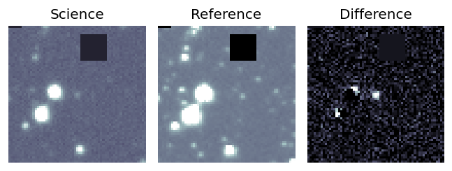
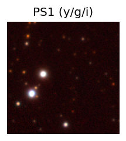
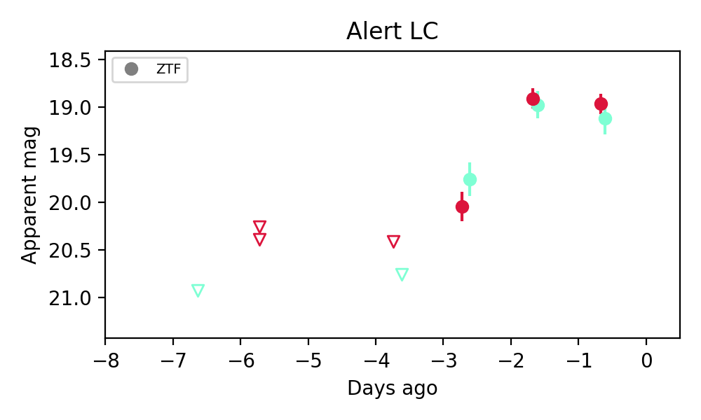
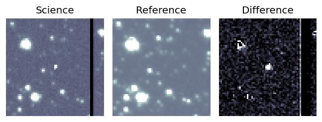
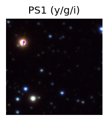
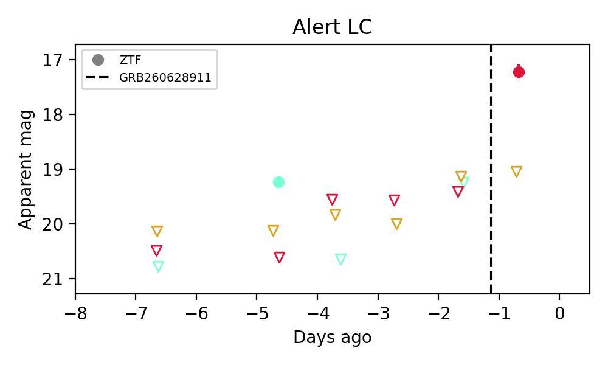
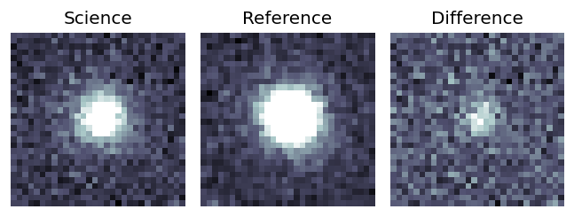
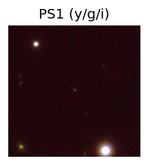
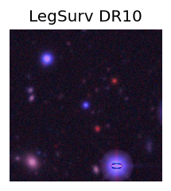
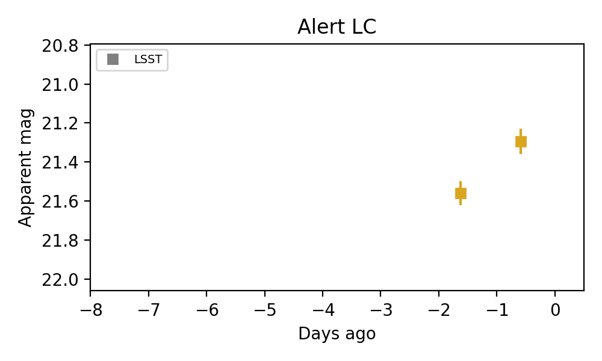

Candidate List 20260630 Previous Day Next Day Section 1: New Sources (age<1d) Cosmological Afterglow
Section 2: Old (1-5d) sources observed last night placeholder
Section 1: New Afterglow/FBOT Cands Last Night (0)
Section 2: Older Sources Observed Last Night (3)
0. [ZTF] ZTF26abegssi (Afterglow?) [Back to Top] [Share] [Trigger Swift] [Fritz ] [Lasair ]RA, Dec: 286.93554, 26.03146 19h 7m44.53s, 26d 1m53.25sGalactic (l, b): 58.02456, 8.23721 ext(g-r) = 0.335


Consistent with synchrotron, g-r>0!
1. [ZTF] ZTF26abejfye (Afterglow?) [Back to Top] [Share] [Trigger Swift] [Fritz ] [Lasair ]RA, Dec: 294.86746, 10.23062 19h39m28.19s, 10d13m50.22sGalactic (l, b): 47.57091, -5.80993 ext(g-r) = 0.561


2. [LSST] 170595943371505673 (FBOT?) [Back to Top] RA, Dec: 0.13637, -1.523 0h 0m32.73s, -1d-31m-22.79sGalactic (l, b): 95.32328, -61.63605 WARNING: -1.45 deg from ecliptic plane ext(g-r) = 0.038


peak abs mag = -21.76 LegacySurvey: 1 sources in 3 arcsec Closest: d = 0.02 arcsec, 135.1 deg (east of north) photoz=0.78 (68% bounds 0.67, 1.01), type=REX peak abs mag = -22.22 (68% bounds -21.79, -22.88) 